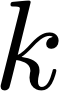
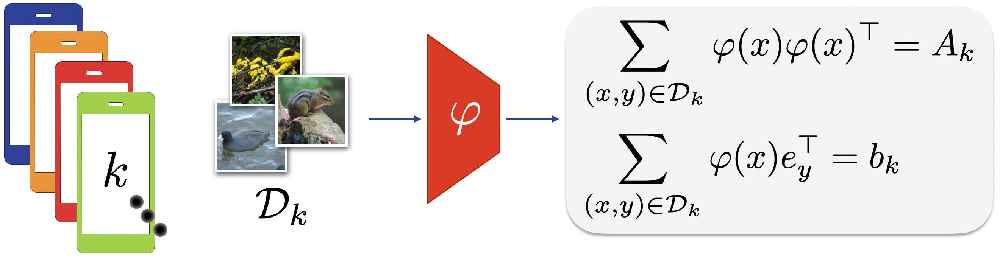
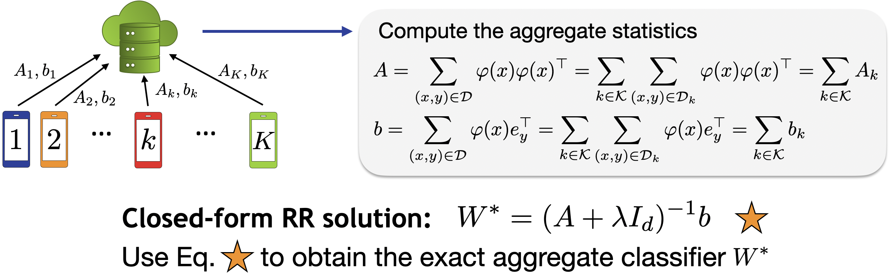
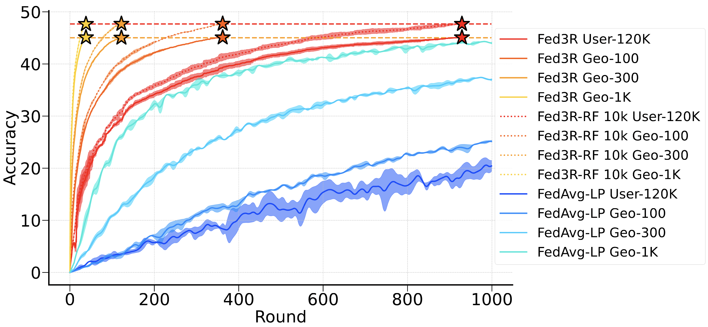
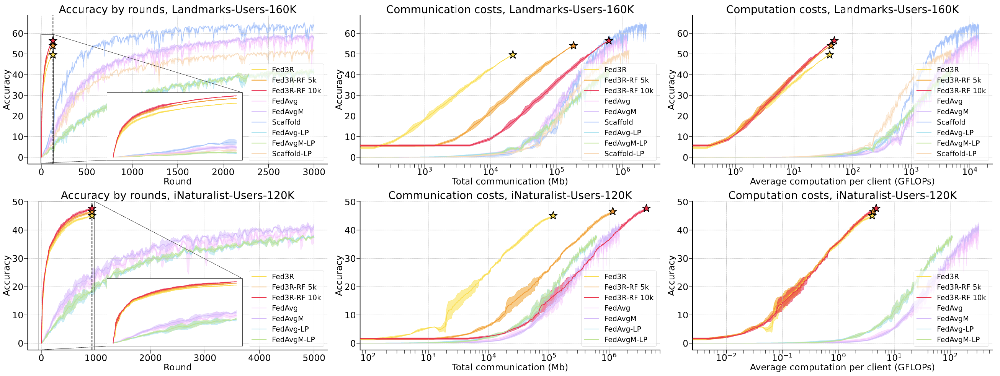
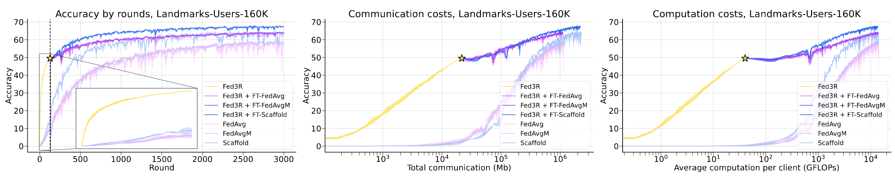
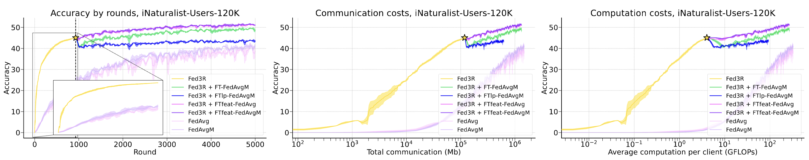

- We will be presenting at ICML24! Join us at the Poster Session 5,
11:30 a.m. - 1 p.m. CEST, Hall C 4-9 #2507 Exhibition Congress Center, Wien (AU), July 25, 2024
- The official code will be released after the summer!
Abstract
Federated Learning (FL) methods often struggle in highly statistically heterogeneous settings. Indeed, non-IID data
distributions cause client drift and biased local solutions, particularly pronounced in the final classification
layer, negatively impacting convergence speed and accuracy. To address this issue, we introduce Federated Recursive
Ridge Regression (Fed3R). Our method fits a Ridge Regression classifier computed in closed form leveraging
pre-trained features. Fed3R is immune to statistical heterogeneity and is invariant to the sampling order of the
clients. Therefore, it proves particularly effective in cross-device scenarios. Furthermore, it is fast and
efficient in terms of communication and computation costs, requiring up to two orders of magnitude fewer resources
than the competitors. Finally, we propose to leverage the Fed3R parameters as an initialization for a softmax
classifier and subsequently fine-tune the model using any FL algorithm (Fed3R with Fine-Tuning, Fed3R+FT). Our
findings also indicate that maintaining a fixed classifier aids in stabilizing the training and learning more
discriminative features in cross-device settings.
[Back to top]
How to cite us
@article{fani2024accelerating,
title={Accelerating Heterogeneous Federated Learning with Closed-form Classifiers},
author={Fanì, Eros and Camoriano, Raffaello and Caputo, Barbara
and Ciccone, Marco},
journal={Proceedings of the International Conference on Machine Learning},
year={2024}
}
In FL, clients’ data reveal individual user habits, preferences, and locations, which challenges the traditional
assumption in machine learning that all data points are independent and identically distributed. This is known
in FL as Statistical Heterogeneity. During training, statistical heterogeneity causes local updates to diverge
from the global optimum. Consequently, the overall speed of convergence can be significantly reduced.
Recent works show that, in neural networks, client drift primarily affects the classifier.
In real-world cross-device scenarios, clients have access to different classes. Suppose client
 is the only one with access to the class “dog”.
Because of partial participation, the same client is typically not sampled in two consecutive rounds. If client
is sampled in one round but not in the next
round, the model can develop data recency bias, forgetting the knowledge about the class “dog”. This phenomenon
is well-studied in areas such as Continual Learning. In classification, it occurs because the softmax
classifier is prone to forgetting when updated with data in a non-i.i.d. or class-imbalanced manner.
Therefore, in this work, we aim to answer the following question: Is it possible to design an efficient FL
method that is robust to client drift in heterogeneous settings and unaffected by classifier bias? Luckily, the
answer is yes, exploiting the properties of closed-form linear classifiers.
Indeed, we propose a new robust and efficient algorithm for federated learning based on Ridge Regression (RR),
that we named Federated Recursive Ridge Regression (Fed3R). Thanks to the linearity
of its formulation, Fed3R is immune to statistical heterogeneity, guarantees faster convergence than the
baselines, and severely reduces computations and communication costs.
In addition, we propose two additional variants of Fed3R: Fed3R with Random Features
(Fed3R-RF), a non-linear
version of the algorithm based on random Fourier features mapping to approximate the Kernel Ridge Regression
solution while keeping the same properties of Fed3R, and Fed3R with Fine-Tuning
(Fed3R+FT), which allows fine-tuning the whole model, the
feature extractor only, or the classifier only, after initializing the model with the Fed3R classifier.
Each client asynchronously computes local statistics using its local dataset and a pre-trained feature extractor
.

Step 2 (server side) - Aggregation
The server collects these statistics and aggregates them to form the matrices
and
, which are used to compute the
optimal regularized least squares classifier. The aggregation guarantees an exact solution equivalent to the
centralized solution.

Fed3R with Random Features (Fed3R-RF)
As pre-trained feature extractors may not be expressive enough to separate features for complex learning
problems linearly, we also introduce Fed3R-RF, which first performs a nonlinear random features mapping of the
latent feature space to a new higher-dimensional feature space by approximating the corresponding kernel feature
map.
Fed3R with Fine-Tuning (Fed3R-FT)
Fed3R performance relies on the quality of the pre-trained feature extractor, which is frozen. Therefore, we
propose Fed3R+FT, where a fine-tuning stage follows the classifier initialization. First, Fed3R+FT learns a
Fed3R classifier using a pretrained feature extractor. Then, it initializes a softmax classifier using the
parameters of the Fed3R classifier. Finally, the whole model is fine-tuned using a traditional FL algorithm. As
the Fed3R classifier is the optimal Regularized Least Squares classifier obtained using the pre-trained feature
extractor, it provides a stable starting point that can mitigate client drift and destructive interference
during aggregation.
We propose three different fine-tuning strategies for Fed3R+FT:
Fed3R + FT: the whole model is fine-tuned.
Fed3R + FTlp: only the classifier is fine-tuned.
Fed3R + FTfeat: only the feature extractor is fine-tuned.
Once all the clients have shared their statistics with the server, the matrices
and
are the same for all possible
partitions of the dataset. Hence, the Fed3R solution is invariant to the particular data split across the clients;
in other words, Fed3R is immune to statistical heterogeneity and is invariant to the clients’ sampling order.
Indeed, Fed3R guarantees the same final solution given any FL split of the same dataset.

Fed3R and Fed3R-RF invariance to different iNaturalist splits. All the curves converge to the same
values, showing how both methods are immune to statistical heterogeneity.
Clients are sampled only once
Differently to most of the classical FL algorithms, each client only needs to communicate its statistics once,
meaning it only needs to be sampled once. Therefore, the higher the participation rate, the faster Fed3R converges.
Differences with gradient-based FL algorithms
Unlike gradient-based FL algorithms, FED3R does not rely on common assumptions such as the smoothness of clients’
objectives or the unbiasedness and bounded variance of stochastic gradients. In addition, Fed3R does not require
assuming bounded gradient dissimilarity among clients, which formalizes the effect of heterogeneous local datasets.
Fast and efficient

Comparison between Fe3R and the baselines. From left to right: accuracy vs rounds, accuracy vs communication
budget, accuracy vs average computation per client. Top row: Landmarks results, Bottom row: iNaturalist
results. Fed3R shows clear advantages regarding convergence speed, communication, and computation budget
required.
Robust initialization for the softmax classifier

Comparison between Fed3R+FT and the baselines Landmarks dataset. At the convergence point of Fed3R, we
substitute the parameters of the Fed3R classifier to the ones of the softmax and then use another algorithm
for fine-tuning.
Fine-tuning the entire model shows benefits on Landmarks, which is more similar to cross-silo FL than
iNaturalist. In federated settings with more clients, such as in iNaturalist, there is a significant negative
impact during the aggregation phase for the Fed3R+FT and Fed3R+FT LP experiments, as the classifier is
fine-tuned and becomes susceptible to the classifier bias phenomenon. Conversely, keeping the classifier fixed
and only fine-tuning the feature extractor as in the Fed3R+FTfeat experiments prevents classifier data recency
bias and destructive interference during the aggregation, ensuring performance improvement and clearly
indicating that the pre-trained features were not sufficiently enough for the target task.

Comparison between Fed3R+FT in all its variants and the baselines, iNaturalist dataset.
[Back to top]
Conclusion
In this work, we introduce Fed3R, a family of FL algorithms based on Recursive RR.
Fed3R is designed to minimize communication and computation costs and accelerate convergence speed while
adhering to the privacy constraints of FL.
Fed3R is immune to statistical heterogeneity by design and can also serve as a robust initialization for
further fine-tuning with optimization-based FL algorithms.
Our algorithm requires up to two orders of magnitude less communication and computation costs
to convergence than the baselines and improves the accuracy up to 12% in challenging cross-device
FL scenarios.
Future works may extend FED3R to streaming data or personalized learning scenarios within the FL framework.
This study was carried out within the FAIR - Future Artificial Intelligence Research and received funding from
the European Union Next-GenerationEU (PIANO NAZIONALE DI RIPRESA E RESILIENZA (PNRR) – MISSIONE 4 COMPONENTE 2,
INVESTIMENTO 1.3 – D.D. 1555 11/10/2022, PE00000013). This manuscript reflects only the authors’ views and
opinions, neither the European Union nor the European Commission can be considered responsible for them. We
acknowledge the CINECA award under the ISCRA initiative for the availability of high-performance computing
resources and support. We also thank the reviewers and area chair for their valuable comments.
 , which are used to compute the
optimal regularized least squares classifier. The aggregation guarantees an exact solution equivalent to the
centralized solution.
, which are used to compute the
optimal regularized least squares classifier. The aggregation guarantees an exact solution equivalent to the
centralized solution.